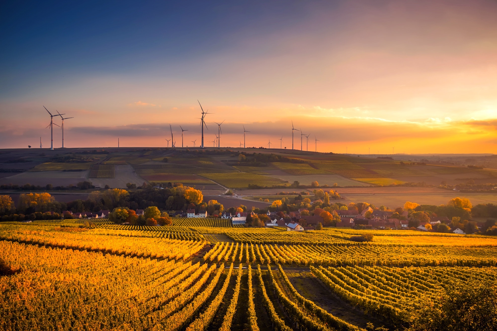

With all the destruction platics are causing to the world you might say why not just Ban plastic production at all. Studies after studies has shown that banning the production of plastic will drive consumers to other less sustainable materials and so has little to no impact. Instead cutting on the scale of the plastic being produced each year can be considered as more realistic approach and Of course it is. Many european countries are implementing this technique. But it seems that the most sustainable and long term solution is recycling but as I mentioned above only 9% of the plastic produced since 1950 have been recycled. By now you might even be thinking that this is just a DEAD END. But wait because we have a better solution.
